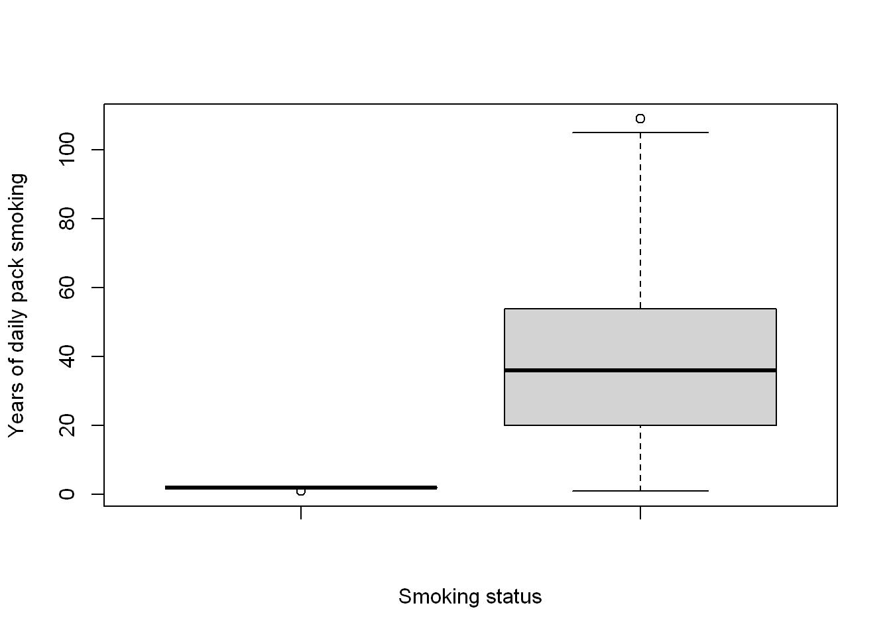
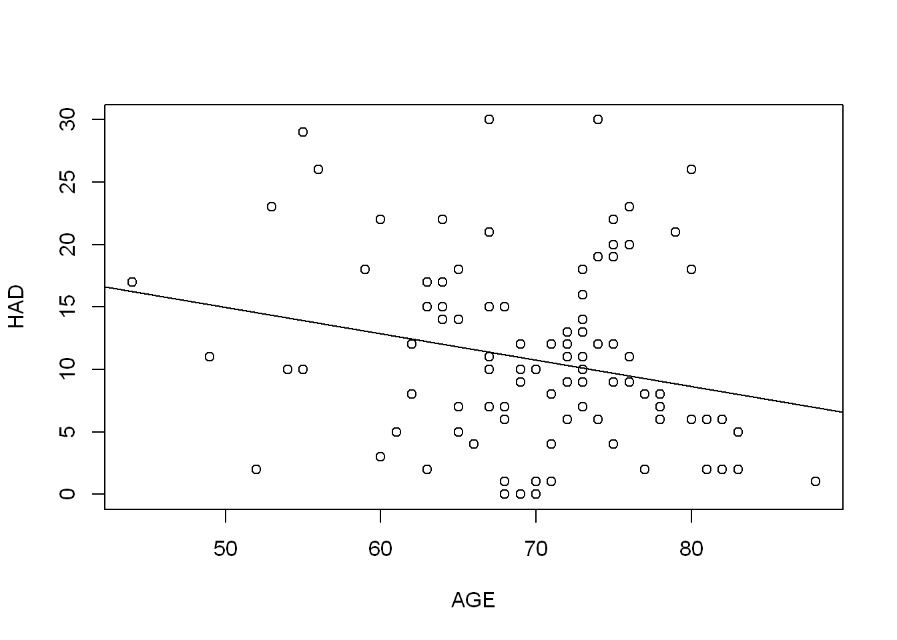
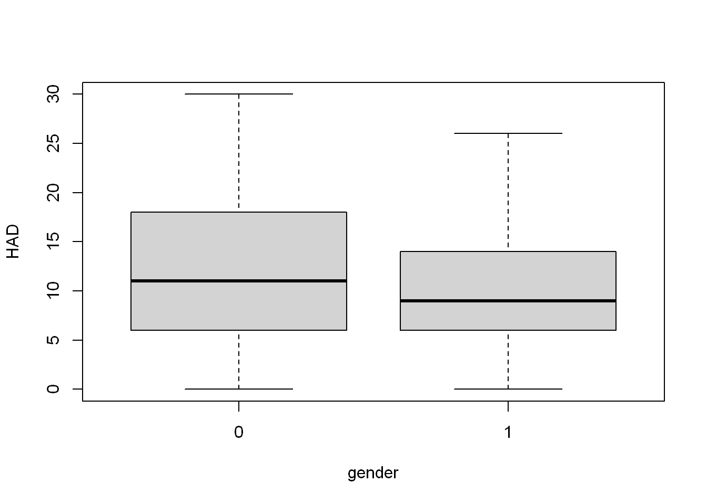
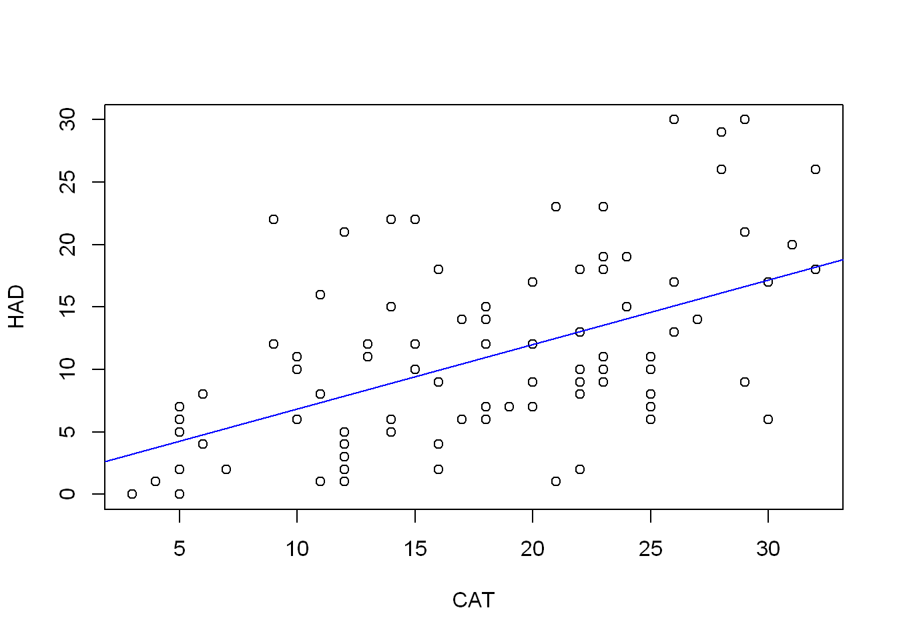

COPD <- read.csv("data/COPD_student_dataset.csv")model-notes
What are the patient characteristics that predict worsening depression/anxiety in COPD patients?
Dataset of 101 Chronic obstructive pulmonary disease COPD patients.
The HAD variable is the score from the Hospital Anxiety and Depression scale.
HADS score ranges from 0 to 21
Choosing predictor variables
Characteristics: Age, Gender, PackHistory, Smoking.
Disease: CAT, COPDSEVERITY.
Lung function: FEV1, FEV1PRED, FVCPRED, FVCPRED1.
Co-morbidities:
Import Dataset
Missing or inaccurate values
Inspecting variables with summary() reveals some unlikely looking ranges.
summary(COPD[["HAD"]]) Min. 1st Qu. Median Mean 3rd Qu. Max.
0.00 6.00 10.00 11.18 15.00 56.20 The HAD score should range from 0 to 21, so there’s a least 1 incorrect value.
sum(COPD[["HAD"]] > 21)[1] 11table(COPD[["HAD"]][COPD[["HAD"]] > 21])
22 23 26 29 30 56.2
3 2 2 1 2 1 In fact there are 11 values over 21. It looks as though the scale for this actually runs from 0 to 30. I’d like to take these questions back to the research team to confirm, but for the sake of this exercise I will just ignore 56.2 as the outlier.
COPD[["HAD"]][COPD[["HAD"]] > 30] <- NA_integer_Similarly, CAT has a clearly separated max value. CAT is the COPD assessment test and according to the CAT user guide is scored on a scale of 0-40.
summary(COPD[["CAT"]]) Min. 1st Qu. Median Mean 3rd Qu. Max.
3.00 12.00 18.00 19.34 24.00 188.00 sum(COPD[["CAT"]] > 40)[1] 1Since there is just the one, I will exclude it.
COPD[["CAT"]][COPD[["CAT"]] > 40] <- NA_integer_Collinearity of predictor candidates
Correlation in continuous variables
continuous_vars <- c("PackHistory", "CAT", "FEV1",
"FEV1PRED", "FVC", "FVCPRED")pairs(COPD[, continuous_vars])
cor(COPD[, continuous_vars]) PackHistory CAT FEV1 FEV1PRED FVC FVCPRED
PackHistory 1.000000000 NA -0.1315051 -0.1313410 -0.09307289 -0.004489788
CAT NA 1 NA NA NA NA
FEV1 -0.131505136 NA 1.0000000 0.7761105 0.82016501 0.515856013
FEV1PRED -0.131340964 NA 0.7761105 1.0000000 0.52152997 0.625877533
FVC -0.093072888 NA 0.8201650 0.5215300 1.00000000 0.622430376
FVCPRED -0.004489788 NA 0.5158560 0.6258775 0.62243038 1.000000000Lung Function
There is strong correlation between the lung function measures FEV1, FEV1PRED, FVC and FVCPRED, so I will seek to include only one of the four, by exploring the individual relationships of each to HAD:
FEV1_model <- lm(HAD ~ FEV1, COPD)
summary(FEV1_model)
Call:
lm(formula = HAD ~ FEV1, data = COPD)
Residuals:
Min 1Q Median 3Q Max
-11.869 -4.710 -1.278 3.932 18.128
Coefficients:
Estimate Std. Error t value Pr(>|t|)
(Intercept) 14.622 1.858 7.871 4.78e-12 ***
FEV1 -2.435 1.072 -2.272 0.0253 *
---
Signif. codes: 0 '***' 0.001 '**' 0.01 '*' 0.05 '.' 0.1 ' ' 1
Residual standard error: 7.188 on 98 degrees of freedom
(1 observation deleted due to missingness)
Multiple R-squared: 0.05004, Adjusted R-squared: 0.04035
F-statistic: 5.162 on 1 and 98 DF, p-value: 0.02527plot(HAD ~ FEV1, COPD)
abline(FEV1_model)
FEV1PRED_model <- lm(HAD ~ FEV1PRED, COPD)
summary(FEV1PRED_model)
Call:
lm(formula = HAD ~ FEV1PRED, data = COPD)
Residuals:
Min 1Q Median 3Q Max
-11.819 -4.662 -1.654 4.731 19.298
Coefficients:
Estimate Std. Error t value Pr(>|t|)
(Intercept) 15.06450 2.02895 7.425 4.19e-11 ***
FEV1PRED -0.07448 0.03260 -2.284 0.0245 *
---
Signif. codes: 0 '***' 0.001 '**' 0.01 '*' 0.05 '.' 0.1 ' ' 1
Residual standard error: 7.186 on 98 degrees of freedom
(1 observation deleted due to missingness)
Multiple R-squared: 0.05056, Adjusted R-squared: 0.04087
F-statistic: 5.218 on 1 and 98 DF, p-value: 0.02451plot(HAD ~ FEV1PRED, COPD)
abline(FEV1PRED_model)
FVC_model <- lm(HAD ~ FVC, COPD)
summary(FVC_model)
Call:
lm(formula = HAD ~ FVC, data = COPD)
Residuals:
Min 1Q Median 3Q Max
-11.161 -5.108 -1.560 4.502 18.147
Coefficients:
Estimate Std. Error t value Pr(>|t|)
(Intercept) 14.4460 2.3162 6.237 1.13e-08 ***
FVC -1.2586 0.7448 -1.690 0.0943 .
---
Signif. codes: 0 '***' 0.001 '**' 0.01 '*' 0.05 '.' 0.1 ' ' 1
Residual standard error: 7.269 on 98 degrees of freedom
(1 observation deleted due to missingness)
Multiple R-squared: 0.02831, Adjusted R-squared: 0.01839
F-statistic: 2.855 on 1 and 98 DF, p-value: 0.09426plot(HAD ~ FVC, COPD)
abline(FVC_model)
FVCPRED_model <- lm(HAD ~ FVCPRED, COPD)
summary(FVCPRED_model)
Call:
lm(formula = HAD ~ FVCPRED, data = COPD)
Residuals:
Min 1Q Median 3Q Max
-12.010 -5.014 -1.193 4.286 19.529
Coefficients:
Estimate Std. Error t value Pr(>|t|)
(Intercept) 18.5253 2.9301 6.322 7.66e-09 ***
FVCPRED -0.0905 0.0330 -2.742 0.00725 **
---
Signif. codes: 0 '***' 0.001 '**' 0.01 '*' 0.05 '.' 0.1 ' ' 1
Residual standard error: 7.107 on 98 degrees of freedom
(1 observation deleted due to missingness)
Multiple R-squared: 0.07127, Adjusted R-squared: 0.06179
F-statistic: 7.52 on 1 and 98 DF, p-value: 0.007254plot(HAD ~ FVCPRED, COPD)
abline(FVCPRED_model)
They all have seem to be a slight negative predictor of HAD, but none of them explain the variation very well. The FVCPRED model has the highest adjusted R squared value at 0.06179.
PackHistory and smoking
PackHistory and smoking are both about a person’s smoking history. smoking is a categorical variable with value 1 for has smoked previously and 2 for currently smokes. PackHistory records a person’s pack years smoking, where pack years is defined as twenty cigarettes smoked every day for one year.
table(COPD[["smoking"]])
1 2
16 85 cor(COPD[["smoking"]], COPD[["PackHistory"]], method = "spearman")[1] -0.02234481They don’t appear to be highly correlated, but I still don’t think I want to include both. “smoking” is probably not that helpful given there are such a small number aren’t current smokers. I still want a bit more of a comparison though.
boxplot(COPD[["smoking"]], COPD[["PackHistory"]],
xlab = "Smoking status",
ylab = "Years of daily pack smoking")
Well, this has raised some concerns to me about PackHistory. If the unit is years the the number with 80+ looks suprising.
sum(COPD[["PackHistory"]] > 80)[1] 6Ok, it’s only 6 which is not too bad, but since there is an AGE column I want to check how possible this is.
sum(COPD[["PackHistory"]] > COPD[["AGE"]])[1] 14This feels a bit problematic. I’m not sure if the description I have about the measure is incorrect, or if it’s the data, but as this is >10% of the dataset that looks impossible I think I’m going to have to ignore the this as a potential predictor. That’s also without adjusting for some assumption of a reasonable age people might start smoking.
Comborbidities
There are several binary variables relating to comorbidity
COPD$comorbid <- COPD$Diabetes == 1 | COPD$muscular == 1 |
COPD$hypertension == 1 | COPD$AtrialFib == 1 | COPD$IHD == 1
COPD$comorbid <- factor(COPD$comorbid)Disease measure
CAT and COPDSEVERITY are both measures of COPD disease status. CAT is a continuous score and COPDSEVERITY has three categories of severity. If both variables are suitable I will select the more detailed CAT.
summary(COPD[["CAT"]]) Min. 1st Qu. Median Mean 3rd Qu. Max. NA's
3.00 12.00 18.00 17.65 23.25 32.00 1 summary(lm(HAD ~ CAT, COPD))
Call:
lm(formula = HAD ~ CAT, data = COPD)
Residuals:
Min 1Q Median 3Q Max
-11.5470 -4.1719 -0.9636 3.5531 15.6532
Coefficients:
Estimate Std. Error t value Pr(>|t|)
(Intercept) 1.69666 1.51963 1.116 0.267
CAT 0.51668 0.07896 6.544 2.84e-09 ***
---
Signif. codes: 0 '***' 0.001 '**' 0.01 '*' 0.05 '.' 0.1 ' ' 1
Residual standard error: 6.161 on 97 degrees of freedom
(2 observations deleted due to missingness)
Multiple R-squared: 0.3063, Adjusted R-squared: 0.2991
F-statistic: 42.82 on 1 and 97 DF, p-value: 2.839e-09table(COPD[["COPDSEVERITY"]])
MILD MODERATE SEVERE VERY SEVERE
23 43 27 8 summary(lm(HAD ~ COPDSEVERITY, COPD))
Call:
lm(formula = HAD ~ COPDSEVERITY, data = COPD)
Residuals:
Min 1Q Median 3Q Max
-11.148 -5.116 -1.148 3.884 18.884
Coefficients:
Estimate Std. Error t value Pr(>|t|)
(Intercept) 8.273 1.524 5.429 4.26e-07 ***
COPDSEVERITYMODERATE 1.844 1.874 0.984 0.3276
COPDSEVERITYSEVERE 3.875 2.053 1.888 0.0621 .
COPDSEVERITYVERY SEVERE 7.727 2.951 2.619 0.0103 *
---
Signif. codes: 0 '***' 0.001 '**' 0.01 '*' 0.05 '.' 0.1 ' ' 1
Residual standard error: 7.147 on 96 degrees of freedom
(1 observation deleted due to missingness)
Multiple R-squared: 0.07984, Adjusted R-squared: 0.05108
F-statistic: 2.777 on 3 and 96 DF, p-value: 0.04542Trying out the variables as predictors
That leaves us with the following candidate predictor variables to explore
- AGE
- gender
- CAT
- FVCPRED
- comorbid
It is known that age and gender impact depression. One might expect people with a worse disease condition i.e. higher CAT score to also have a worse HAD score. First I want to explore the relationship of each variable individually with the outcome HAD.
Characteristics
age_lm <- lm(HAD ~ AGE, COPD)
summary(age_lm)
Call:
lm(formula = HAD ~ AGE, data = COPD)
Residuals:
Min 1Q Median 3Q Max
-12.554 -4.407 -1.103 3.659 20.081
Coefficients:
Estimate Std. Error t value Pr(>|t|)
(Intercept) 25.50974 6.43149 3.966 0.000139 ***
AGE -0.21069 0.09111 -2.312 0.022843 *
---
Signif. codes: 0 '***' 0.001 '**' 0.01 '*' 0.05 '.' 0.1 ' ' 1
Residual standard error: 7.181 on 98 degrees of freedom
(1 observation deleted due to missingness)
Multiple R-squared: 0.05174, Adjusted R-squared: 0.04207
F-statistic: 5.348 on 1 and 98 DF, p-value: 0.02284confint(age_lm) 2.5 % 97.5 %
(Intercept) 12.7466586 38.27282554
AGE -0.3914899 -0.02988553The model suggests that for every 1 year of age, HAD score decreases by 0.21. So there does appear to be some relationship, but it doesn’t explain the variation in HAD very well.
plot(HAD ~ AGE, COPD)
abline(age_lm)
gender_lm <- lm(HAD ~ gender, COPD)
summary(gender_lm)
Call:
lm(formula = HAD ~ gender, data = COPD)
Residuals:
Min 1Q Median 3Q Max
-12.000 -4.046 -1.023 4.954 18.000
Coefficients:
Estimate Std. Error t value Pr(>|t|)
(Intercept) 12.000 1.236 9.706 5.26e-16 ***
gender -1.954 1.533 -1.274 0.206
---
Signif. codes: 0 '***' 0.001 '**' 0.01 '*' 0.05 '.' 0.1 ' ' 1
Residual standard error: 7.314 on 98 degrees of freedom
(1 observation deleted due to missingness)
Multiple R-squared: 0.0163, Adjusted R-squared: 0.006257
F-statistic: 1.623 on 1 and 98 DF, p-value: 0.2056confint(gender_lm) 2.5 % 97.5 %
(Intercept) 9.546528 14.453472
gender -4.997004 1.089311The p-value of 0.2 means we cannot rule out the null hypothesis of gender having no relationship to HAD score, and indeed the 95% confidence interval includes a gradient of 0. I will continue to explore this with gender alongside other variables.
boxplot(HAD ~ gender, COPD)
We can see the HAD score distribution is fairly similar in men and women. I do want to check out age and gender alongside each other.
age_gender_lm <- lm(HAD ~ AGE + gender, COPD)
summary(age_gender_lm)
Call:
lm(formula = HAD ~ AGE + gender, data = COPD)
Residuals:
Min 1Q Median 3Q Max
-11.8001 -4.6953 -0.8481 4.1130 19.0821
Coefficients:
Estimate Std. Error t value Pr(>|t|)
(Intercept) 25.51495 6.43430 3.965 0.00014 ***
AGE -0.19726 0.09222 -2.139 0.03496 *
gender -1.45745 1.52404 -0.956 0.34129
---
Signif. codes: 0 '***' 0.001 '**' 0.01 '*' 0.05 '.' 0.1 ' ' 1
Residual standard error: 7.184 on 97 degrees of freedom
(1 observation deleted due to missingness)
Multiple R-squared: 0.0606, Adjusted R-squared: 0.04123
F-statistic: 3.129 on 2 and 97 DF, p-value: 0.04822Do they have an impact through intersection?
age_gender_lm <- lm(HAD ~ AGE * gender, COPD)
summary(age_gender_lm)
Call:
lm(formula = HAD ~ AGE * gender, data = COPD)
Residuals:
Min 1Q Median 3Q Max
-13.2680 -4.4037 -0.9083 3.9165 18.4149
Coefficients:
Estimate Std. Error t value Pr(>|t|)
(Intercept) 9.59955 12.64044 0.759 0.449
AGE 0.03504 0.18365 0.191 0.849
gender 19.93655 14.73321 1.353 0.179
AGE:gender -0.30942 0.21196 -1.460 0.148
Residual standard error: 7.143 on 96 degrees of freedom
(1 observation deleted due to missingness)
Multiple R-squared: 0.081, Adjusted R-squared: 0.05228
F-statistic: 2.821 on 3 and 96 DF, p-value: 0.04299It doesn’t appear to be the case and seems like it might be more valuable to include AGE without gender.
Disease
cat_lm <- lm(HAD ~ CAT, COPD)
summary(cat_lm)
Call:
lm(formula = HAD ~ CAT, data = COPD)
Residuals:
Min 1Q Median 3Q Max
-11.5470 -4.1719 -0.9636 3.5531 15.6532
Coefficients:
Estimate Std. Error t value Pr(>|t|)
(Intercept) 1.69666 1.51963 1.116 0.267
CAT 0.51668 0.07896 6.544 2.84e-09 ***
---
Signif. codes: 0 '***' 0.001 '**' 0.01 '*' 0.05 '.' 0.1 ' ' 1
Residual standard error: 6.161 on 97 degrees of freedom
(2 observations deleted due to missingness)
Multiple R-squared: 0.3063, Adjusted R-squared: 0.2991
F-statistic: 42.82 on 1 and 97 DF, p-value: 2.839e-09confint(cat_lm) 2.5 % 97.5 %
(Intercept) -1.3193823 4.7127094
CAT 0.3599729 0.6733953As a measure of disease I would expect CAT score to predict increased HAD score. Indeed, CAT looks like it’s going to be valuable to include, there is a clear positive relationship with HAD. That there is no relationship can be ruled out even at significance levels below 0.001.
plot(HAD ~ CAT, COPD)
abline(cat_lm, col = "blue")
Comborbidities
comorbid_lm <- lm(HAD ~ comorbid, COPD)
summary(comorbid_lm)
Call:
lm(formula = HAD ~ comorbid, data = COPD)
Residuals:
Min 1Q Median 3Q Max
-10.7593 -5.5811 -0.7593 4.6689 20.4783
Coefficients:
Estimate Std. Error t value Pr(>|t|)
(Intercept) 9.522 1.075 8.861 3.58e-14 ***
comorbidTRUE 2.238 1.462 1.530 0.129
---
Signif. codes: 0 '***' 0.001 '**' 0.01 '*' 0.05 '.' 0.1 ' ' 1
Residual standard error: 7.288 on 98 degrees of freedom
(1 observation deleted due to missingness)
Multiple R-squared: 0.02333, Adjusted R-squared: 0.01337
F-statistic: 2.341 on 1 and 98 DF, p-value: 0.1292confint(comorbid_lm) 2.5 % 97.5 %
(Intercept) 7.3892986 11.654180
comorbidTRUE -0.6643639 5.139404No clear indication, but I want to check out if comorbodity interacts with disease/condition.
cat_comorbid_lm <- lm(HAD ~ CAT + comorbid + CAT * comorbid, COPD)
summary(cat_comorbid_lm)
Call:
lm(formula = HAD ~ CAT + comorbid + CAT * comorbid, data = COPD)
Residuals:
Min 1Q Median 3Q Max
-11.662 -3.998 -1.844 4.023 15.492
Coefficients:
Estimate Std. Error t value Pr(>|t|)
(Intercept) 0.2758 2.0973 0.132 0.896
CAT 0.5474 0.1119 4.890 4.09e-06 ***
comorbidTRUE 3.0817 3.0425 1.013 0.314
CAT:comorbidTRUE -0.0790 0.1584 -0.499 0.619
---
Signif. codes: 0 '***' 0.001 '**' 0.01 '*' 0.05 '.' 0.1 ' ' 1
Residual standard error: 6.158 on 95 degrees of freedom
(2 observations deleted due to missingness)
Multiple R-squared: 0.3213, Adjusted R-squared: 0.2999
F-statistic: 14.99 on 3 and 95 DF, p-value: 4.586e-08The relationship looks weaker, but I will note that the adjusted R squared is slightly higher than that of \(CAT\) on it’s own, so it may better explain the variance, but p-values for both \(comorbid\) and \(CAT * comorbid\) are very high, making their null hypotheses significantly likely.
Selecting multiple variabels
more multiple combinations to make my final variable selection.I’m confident I want to include CAT, but want to try out some
multi_lm1 <- lm(HAD ~ CAT + FVCPRED + AGE + gender + comorbid, COPD)
summary(multi_lm1)
Call:
lm(formula = HAD ~ CAT + FVCPRED + AGE + gender + comorbid, data = COPD)
Residuals:
Min 1Q Median 3Q Max
-10.0897 -4.2262 -0.7329 2.7345 16.7165
Coefficients:
Estimate Std. Error t value Pr(>|t|)
(Intercept) 17.90909 6.42997 2.785 0.00648 **
CAT 0.45935 0.08132 5.648 1.75e-07 ***
FVCPRED -0.03636 0.03000 -1.212 0.22849
AGE -0.17148 0.07770 -2.207 0.02977 *
gender -1.72259 1.29278 -1.332 0.18596
comorbidTRUE 1.96907 1.22192 1.611 0.11047
---
Signif. codes: 0 '***' 0.001 '**' 0.01 '*' 0.05 '.' 0.1 ' ' 1
Residual standard error: 5.962 on 93 degrees of freedom
(2 observations deleted due to missingness)
Multiple R-squared: 0.3772, Adjusted R-squared: 0.3437
F-statistic: 11.26 on 5 and 93 DF, p-value: 1.658e-08confint(multi_lm1) 2.5 % 97.5 %
(Intercept) 5.14043738 30.67774911
CAT 0.29785634 0.62084225
FVCPRED -0.09592529 0.02320335
AGE -0.32577467 -0.01718824
gender -4.28980514 0.84461913
comorbidTRUE -0.45740822 4.39555591This does bring the adjusted R-squared higher, but as with CAT and comorbid, FVCPRED, comorbid and gender have high p-values.
I’m not sure how best to interpret all of that together, but it does make me think it may be best to try just CAT and AGE.
cat_age_lm <- lm(HAD ~ CAT + AGE, COPD)
summary(cat_age_lm)
Call:
lm(formula = HAD ~ CAT + AGE, data = COPD)
Residuals:
Min 1Q Median 3Q Max
-11.3435 -4.1107 -0.5489 3.4906 16.4015
Coefficients:
Estimate Std. Error t value Pr(>|t|)
(Intercept) 13.93262 5.71519 2.438 0.0166 *
CAT 0.50484 0.07759 6.506 3.49e-09 ***
AGE -0.17170 0.07743 -2.218 0.0289 *
---
Signif. codes: 0 '***' 0.001 '**' 0.01 '*' 0.05 '.' 0.1 ' ' 1
Residual standard error: 6.04 on 96 degrees of freedom
(2 observations deleted due to missingness)
Multiple R-squared: 0.3401, Adjusted R-squared: 0.3263
F-statistic: 24.73 on 2 and 96 DF, p-value: 2.169e-09confint(cat_age_lm) 2.5 % 97.5 %
(Intercept) 2.5880619 25.27718425
CAT 0.3508179 0.65886693
AGE -0.3253919 -0.01801275My feeling is this is the best model of the ones I’ve tried. Both CAT and AGE seem to have explanatory power over their respective null hypotheses. The adjusted R-squared value is higher than most of the other models I’ve tried at \(0.33\), but that’s still quite low if the potential max is 1, and so suggests not giving a great explanation of the variation.
I feel like I’m missing something, but I think this is my best first shot:
\(HAD = 13.93 + 0.50 * CAT - 0.17 * AGE\)